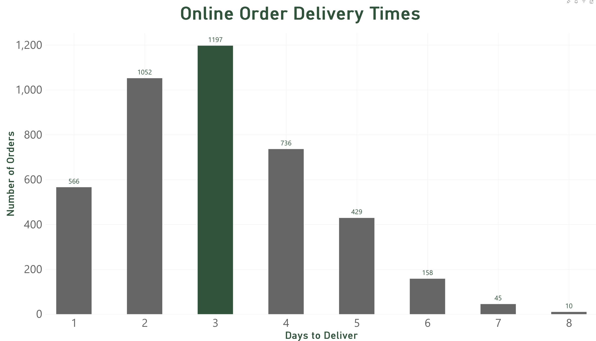

Power BI Sales Data Analysis - Ashton Hatch
How long do online customers wait for delivery?

This chart shows how many days online orders took to reach customers. The x axis shows the number of days, and the y axis shows the number of orders.
The most common delivery time was three days, with 1,197 orders. Two day delivery was the second most common with 1,052 orders. Only ten orders took eight days.
Most online orders were delivered within two to four days. This information can help the business understand its delivery performance and identify longer delivery times.
Previous Page Next Page